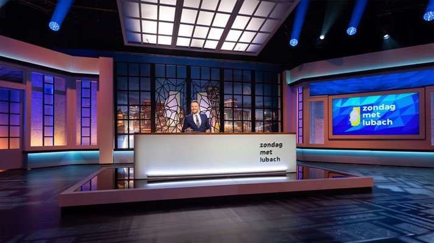

Waarom was Zondag met Lubach zo succesvol?
Interview
Zondagavond kwam het succesvolste satirische programma van het afgelopen decennium tot een einde. Zelden had een show in Nederland zo’n invloed op de maatschappelijke agenda als Zondag met Lubach. Mark Boukes (Universiteit van Amsterdam) deed onderzoek naar het programma.
Zondag met Lubach
Wat vond u als communicatiewetenschapper zo interessant aan Zondag met Lubach?
‘Het programma heeft laten zien dat satire invloed kan hebben. Zondag met Lubach deed vaak een call to action, zoals wij dat noemen: een oproep aan het publiek of een bewind om actie te ondernemen. Het meest bijzondere voorbeeld daarvan, was de petitie tegen ‘de sleepwet’ (Wet op de inlichtingen- en veiligheidsdiensten, red.) in 2017. Die had echt politieke consequenties.’
Die petitie werd meer dan 300 duizend keer ondertekend, waardoor een referendum georganiseerd moest worden. Hoe kon een petitie over een vrij technisch onderwerp zo groot worden?
‘Allereerst had de show zelf een heel groot publiek. Soms keken er wel twee miljoen mensen naar. Dat is bizar veel. In de Verenigde Staten, een land met veel meer inwoners, halen vergelijkbare shows twee tot vier miljoen kijkers.’
‘Daarnaast slaagde Zondag met Lubach erin zo’n onderwerp op een bredere maatschappelijke agenda te zetten. Na die uitzending gingen andere media en politici met ‘de sleepwet’ aan de haal. Dan wordt zo’n onderwerp groter en groter en komen steeds meer mensen ermee in aanraking.’
Voormalig D66-Kamerlid Kees Verhoeven tweette dit jaar over ‘de Lubach-illusie’: veel mensen hebben het idee dat de politiek en de media een onderwerp pas oppakken, nadat Lubach er een item aan heeft gewijd. In de praktijk zijn zij er vaak al langer mee bezig, zei Verhoeven. Heeft hij een punt?
‘Vaak staan de onderwerpen die Lubach behandelt al enigszins op de kaart, zoals de windmolens in de kop van Noord-Holland die slechts de datacenters van Microsoft dienden. Maar: vaak is er niet genoeg maatschappelijke daadkracht om snel tot oplossingen te komen. Lubach kan zeker het laatste zetje geven om dat te bereiken.’
‘Neem TTIP, het handelsverdrag tussen de Europese Unie en de Verenigde Staten, waarnaar ik onderzoek heb gedaan. Lilianne Ploumen probeerde dat als minister van Buitenlandse Handel op de maatschappelijke agenda zetten. Maar, zegt zij zelf ook, niemand was echt bereid om daarnaar te luisteren. Totdat Lubach aandacht eraan besteedde, toen zag je de aandacht ervoor omhoogschieten. Door een onderwerp bij een groot publiek op een activistische manier te brengen, kun je actie teweegbrengen.’
Wat stelde het programma in staat zo’n groot publiek te trekken?
‘De kracht van het programma is, denk ik, dat de makers zich op het snijvlak tussen journalistiek en komedie begaven. Daardoor kwamen twee soorten publiek eropaf: kijkers die wilden lachen en kijkers die geïnformeerd wilden worden over onderwerpen die nog niet heel bekend waren.
‘Lubach is niet de eerste die in Nederland zo’n show probeerde op te zetten. Eerdere pogingen zijn allemaal mislukt. Hij is kennelijk wel een host tot wie mensen zich aangetrokken voelen.’
In uw onderzoek vergelijkt u Lubach met John Oliver, die in de Verenigde Staten een satirische talkshow presenteert. Wat zijn de gelijkenissen?
‘Ze slagen erin informatie en vermaak heel goed te mixen, en verbinden dat dus aan een call to action. Na een regulier nieuwsitem voelen mensen zich soms hulpeloos: wat een misère in de wereld. Lubach en Oliver laten dezelfde misère zien, maar geven ook een idee wat je zelf ertegen kunt doen. Dat vinden kijkers fijn.’
‘Daarnaast zijn ze allebei heel erg afhankelijk van de mainstream media. Ze doen grondig onderzoek naar hun onderwerpen, maar zullen zelf geen mensen opbellen om ze te citeren. Vaak wordt de suggestie gewekt: Lubach en Oliver zijn zelf journalisten. Ik zou ze eerder ‘secundaire journalisten’ noemen. Of ‘parasitaire journalisten’, dat hoor je ook wel eens. Zonder het werk van journalistieke media kunnen zij niets.’
Mainstream media leverden ook wel eens kritiek daarop: Lubachs manier van werken bevat journalistieke elementen, maar hij noemt zichzelf geen journalist om een bewijslast te ontduiken. Hoe terecht is dat verwijt?
‘Enerzijds is dat terecht, want het programma heeft een informerende functie. Lubach hoeft geen verantwoordelijkheid te dragen en kan zich daardoor overtuigender, effectiever en populairder uitspreken. Hetzelfde verwijt kun je overigens maken aan een columnist voor een krant.
‘Tegelijkertijd begrijp ik goed dat het programma die verantwoordelijkheid niet opeist. Als de makers dat wel zouden doen, wordt het programma veel minder grappig. Ondertussen doen ze hun best om geen onwaarheden te verkondigen.’
Heeft Lubach de weg vrijgemaakt voor meer van dit soort programma’s?
‘Ik hoop het. Je ziet op YouTube meer van dit soort programma’s ontstaan. Ze verrijken het Nederlandse medialandschap. In een democratie is het belangrijk dat mensen bij maatschappelijke onderwerpen betrokken raken. Als een vermakelijk, informerend programma dat kan doen, is dat mooi meegenomen.
‘Het genre is nu bekend in Nederland. De vraag is: kan iemand eroverheen komen? Kopspijkers, een programma van een ander soort satire, was zo goed dat andere shows het niet konden evenaren. Misschien was Zondag met Lubach ook te succesvol om het voor herhaling vatbaar te maken.’